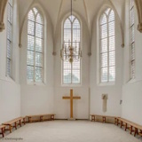

Stilteviering in de Joriskerk
Samen ervaren dat het waardevol is om je dag beginnen in stilte, meditatie of gebed. Om je zo te verbinden met de wereld, elkaar, jezelf en met God. Dit kan helpen bij je dagritme, bidden en innerlijke rust. Het kan ook voor mensen een hulp zijn om te bidden voor de wereld om ons heen.